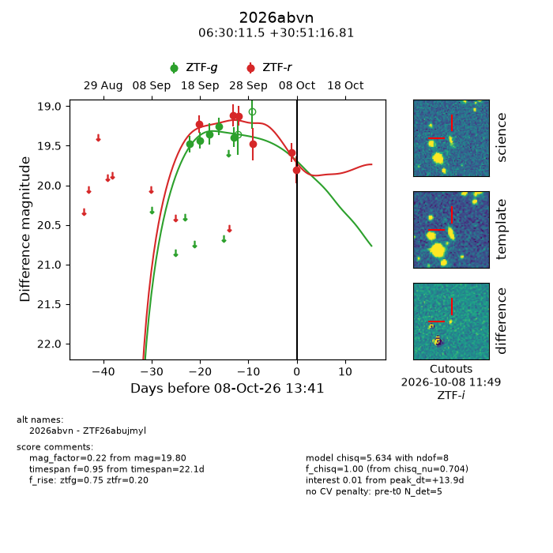
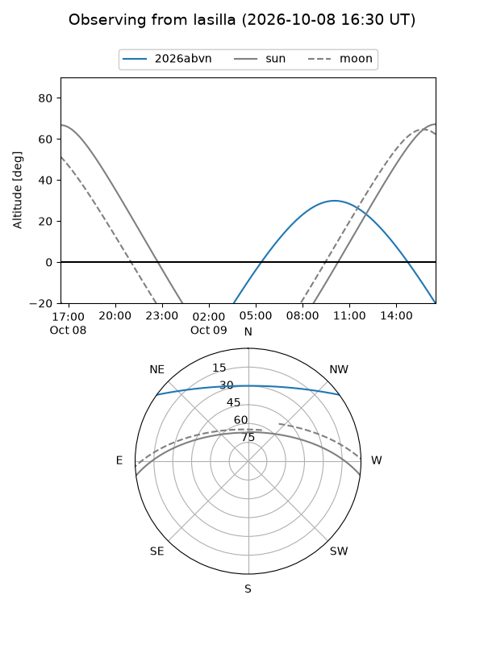
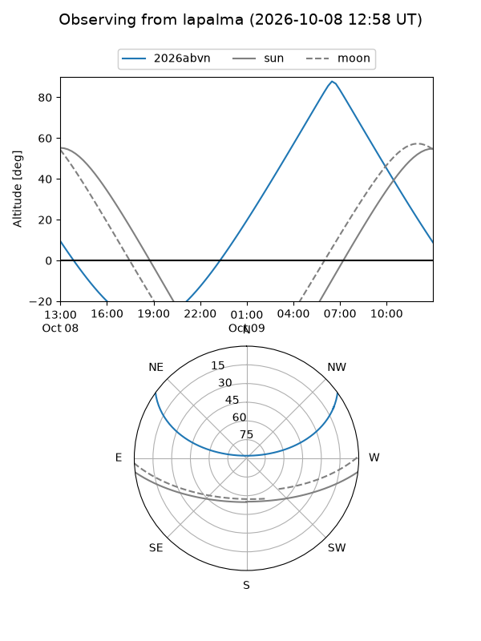
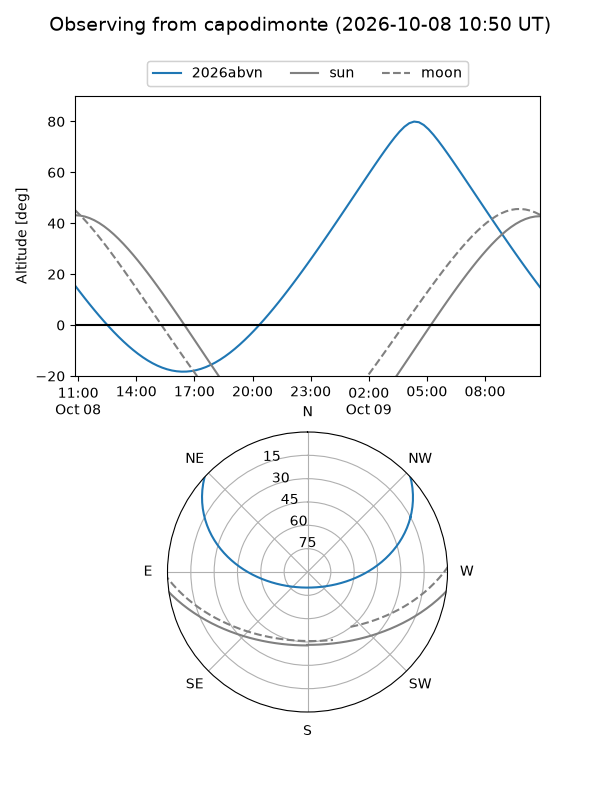
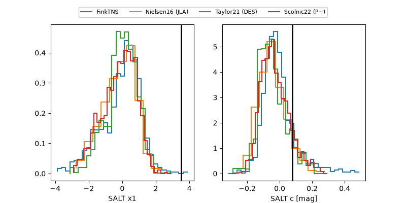

2026abvn
Target 2026abvn at 2026-10-08 13:43
Aliases and brokers:
FINK-ZTF: ztf.fink-portal.org/ZTF26abujmyl
Lasair-ZTF: lasair-ztf.lsst.ac.uk/objects/ZTF26abujmyl
ALeRCE-ZTF: alerce.online/object/ZTF26abujmyl
YSE-PZ: ziggy.ucolick.org/yse/transient_detail/2026abvn
TNS name: wis-tns.org/object/2026abvn
Direct TNS query: direct search
alt names
ZTF26abujmyl (ztf,fink_ztf)
2026abvn (tns,yse)
Coordinates:
equatorial (ra, dec) = 97.5481,+30.85467
equatorial (HMS+DMS) = 06:30:11.54,+30:51:16.81
galactic (l, b) = (182.9738,+9.38873)
Flags:
TNS type: nan
peak dt: +13.9
Photometry:
last ztfg=19.39, ztfr=19.80
5 ztfg, 6 ztfr detections
Lightcurve

Visibility



Additional plots
